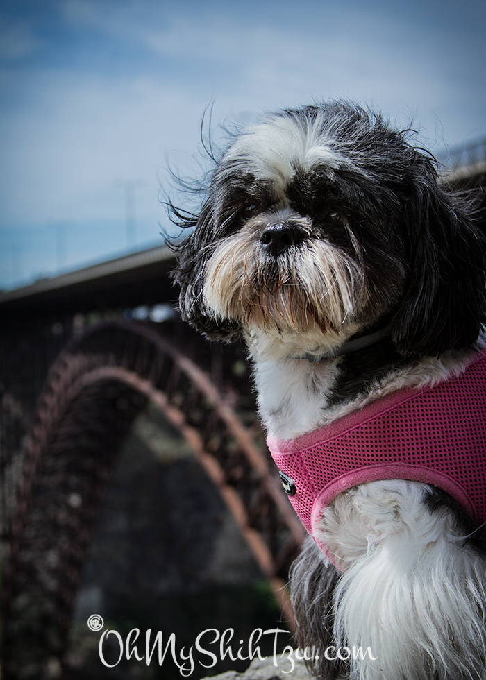

Christine & the Girls
 I am Christine Paul, a wife, daughter, student and crazy dog mom. You can normally find me in a t-shirt, jeans & flip flops, my California casual! Pursuing my love of photography, I have recently just had my fine art photography work displayed at the Fresno City Hall for student exhibition.
Less than 1 year ago I started blogging as a way to cope with caring for a terminally ill dog, Mr. JoeJo (R.I.P). Having been afflicted with Canine Cognitive Dysfunction, I felt that pet owners needed to have more information of what really happens with this horrible disease.
My dogs are my world and I love giving them the very best life has to offer. All my dogs are either rescues or dogs I saved due to circumstances beyond their control. Kyra was my first rescue from the wonderful Best Friends Pet Sanctuary in Kanab, UT to Chicky coming to us after her human mommy passed away.
A small dog training specialist (retired) and Canine Good Citizen Evaluator, I have a passion for keeping my dogs fit and healthy through exercise and mental stimulation. Though they can be deemed "lapdogs" they love to stay active and fit and enjoy special times alone with 'mommy'. Join us as we explore pet care, agility, canine conditioning & training with a multi-dog household.